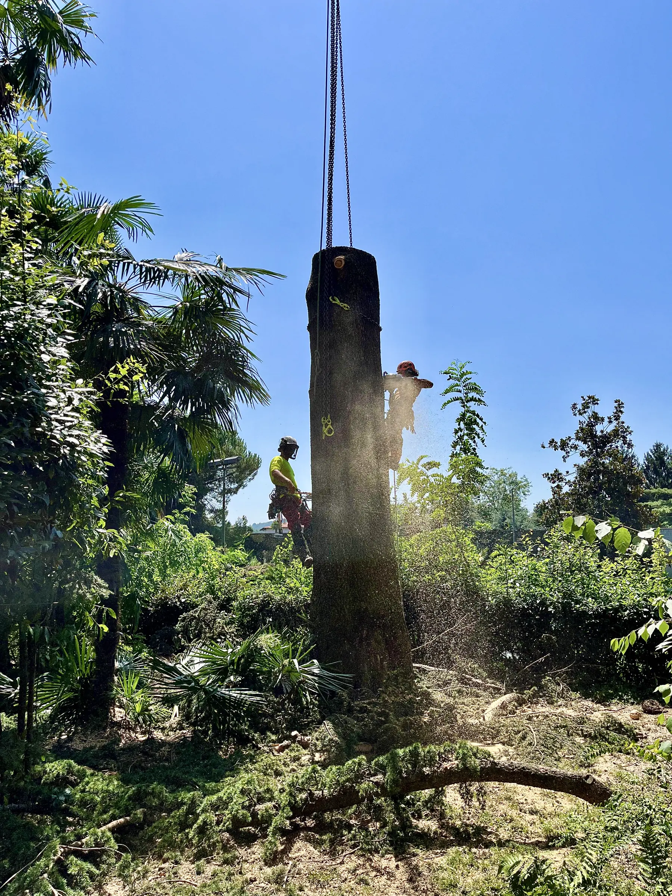
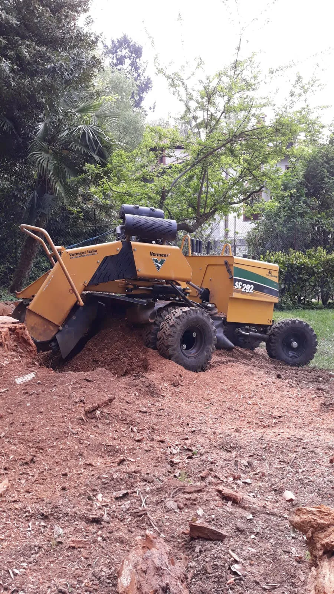
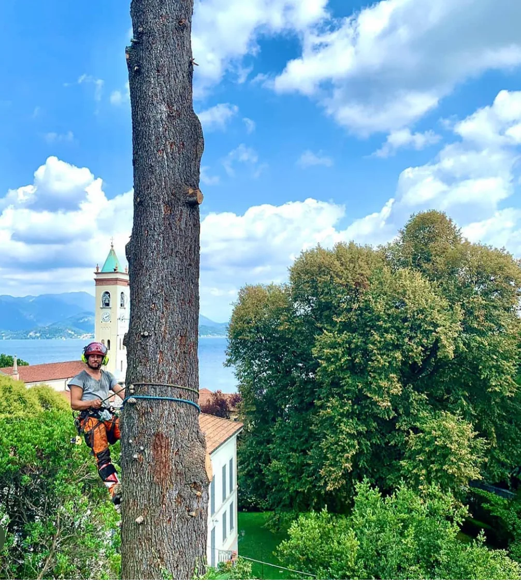
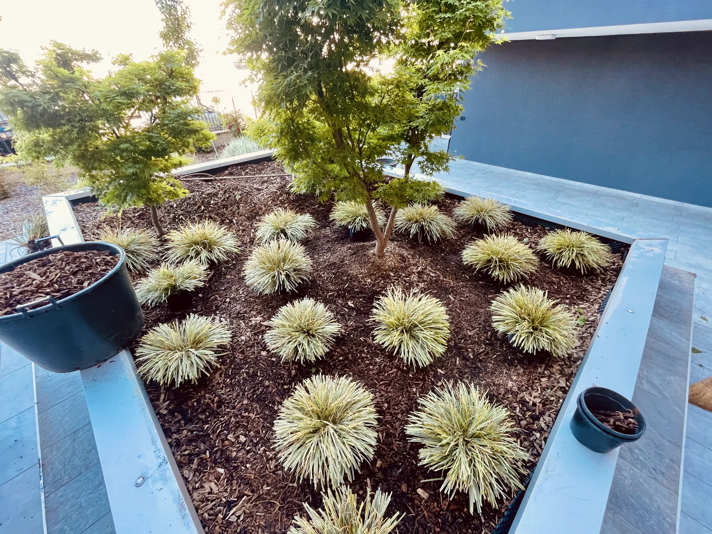

Abbattimento controllato
L’abbattimento controllato permette di smontare l’albero in sezioni gestibili, riducendo al minimo il rischio di danni.
Alberi ad alto fusto
La fresatura dei ceppi è un intervento specialistico che permette di rimuovere in modo efficace e sicuro le ceppaie degli alberi abbattuti.
Grazie a questa operazione, lo spazio verde viene liberato, eliminando ogni ostacolo alla realizzazione di nuovi progetti paesaggistici o alla semplice fruizione dell’area.

Servizi

L’abbattimento controllato permette di smontare l’albero in sezioni gestibili, riducendo al minimo il rischio di danni.

Il treeclimbing è una tecnica professionale di arrampicata sugli alberi utilizzata per la potatura, la manutenzione e la cura di esemplari di grandi dimensioni.

Il nostro servizio di costruzione giardini nasce con l’obiettivo di trasformare ogni spazio esterno in un progetto su misura, pensato per rispondere alle vostre esigenze estetiche, funzionali ed ecologiche.
Raccontaci di cosa hai bisogno: ti ricontattiamo per un sopralluogo e un preventivo dettagliato.